Faculty
Inga Y. Magid
Keys for Kids Founder and Educational Director
Piano, Keys for Kids classes
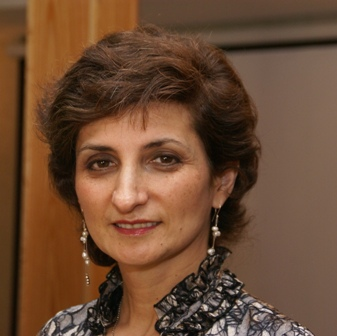
"Keys for Kids®" creator and founder, Inga Y Magid, is a music theorist, educator, lecturer, and pianist. A native of Ukraine, she holds a Master's degree in music education from Ukraine as well as a Master's in Piano Pedagogy from Webster University, St. Louis, MO.
Inga Magid has been a faculty member at the University of Massachusetts (12 years), Lowell, MA, Webster University, St. Louis, MO, and the University of St. Louis, MO. She developed her first courses in 1994 as a result of a lifelong interest in music for children, with a goal toproduce a comprehensive, motivating beginner's music program to train the ears and brain as much as the fingers.
Arpineh Arakelian
Piano
Arpineh Arakelian received a Master's degree in Piano Performance with Honors from the Armenian University. She completed her PHD in Music Education in 1995
Arpineh was a winner of the All-Soviet Olympiad for Russian Language and History of Art (1989-1990). She created a Music curriculum for Public schools in Armenia, where it is still currently in use on a daily basis. She has appeared as a piano soloist at concert halls of National TV and Radio in Armenia.
Arpineh is a piano teacher and music educator with 20 years of experience. At the Keys for Kids Studio, she offers private piano instruction for students of all ages and levels.
Rory Boyd
Musical Theater
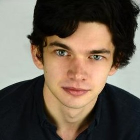Rory was bitten by the theatre bug early on. As a member and later mentor of the Byre Youth Theatre in Scotland, he learnt first-hand and from an early age, how drama and theatre can be of great influence growing up.
Rory has graduated from The Boston Conservatory with an M.F.A. in Musical Theater. Before attending the Boston Conservatory, he completed a Master's degree at University College London and a Bachelor's degree at the University of Cambridge, both in the United Kingdom, with a focus on studying playwriting and the history of theater. Rory plans to bring this diverse set of educational experiences to the classroom setting, to excite passion and a commitment to the arts. Rory has taught middle and high school aged students as tutor in Cambridge, England, where he learned the value of a firm guiding hand coupled with patience and understanding.
Rory strongly believe that a passion in the arts should be cultivated when young. His teaching philosophy is based in physical movement in relation to the space around us, exploring imagination and discovering the value of theatre.
Henry Buck
Piano, Composition
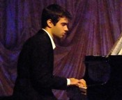Henry Buck is a Boston-based musician. His compositions encompass a wide variety of styles, from common practice tonality to twelve-tone serialism to microtonality to show tunes. Broadway composer Adam Guettel has called him "one of the spell casters." As a performer, Henry is an adept classical, collaborative, pop, and jazz pianist. A passionate teacher, Henry has offered instruction in piano and music theory for several years. His teaching style focuses on building solid fundamentals, then encouraging students to harness their own expressive power through images, metaphors and narratives. Henry also has an affinity for musical theater, having served as conductor or music director for over a dozen productions.
Henry earned an M.M. from the Boston Conservatory, where he studied composition with Marti Epstein and Curtis Hughes and voice with Victor Jannett. He earned a B.M. from the University of Massachusetts Amherst.
Alejandro Castellano
Electric and Acoustic Guitar, Rock Band, Electric Bass, Drums, Oud, Nay
Alejandro Castellano is a diverse guitarist that has been teaching for over 15 years. He has studied Classical Guitar Performance, Jazz, Music Education, Music Theory, and Arabic Music at Berklee College of Music, The Aaron Copland School of Music, and Nassau Community College.
As a teacher, he is a caring, patient, and dedicated instructor. He works with his students to develop the physical and technical aspects of guitar playing that will enable them to play any style they wish; tailoring the lessons to their needs and abilities. He teaches rock, classical, jazz, pop, and other styles. Alejandro also teaches Arabic instruments like Oud and Nay.
Alejandro is a member of the prestigious New York Arabic Orchestra and leads and composes for the band Indra, a progressive grunge rock band.
Monica Daly
Piano, Keys for Kids Classes
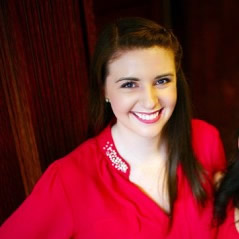Monica Daly received her undergraduate degree in Piano Performance from West Chester University of Pennsylvania, and a Master's Degree in Collaborative Piano from Bard College's Longy School of Music. She has studied with esteemed instructors from Julliard, Oberlin, Manhattan School of Music, and Bard College. While at West Chester University of Pennsylvania, Monica pursued her studies in piano pedagogy with Dr. Patricia Powell.
As a teacher, Monica believes that learning music should be enjoyable, rather than stressful. She focuses not just on reading music and playing the notes, but also aural theory, instilling confidence at the piano, playing without tension both mentally and physically, and understanding the music on an artistic and personal level.
Narine Dolukhanyan
Violin
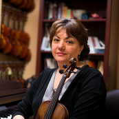Narine Dolukhanyan studied violin from the age of seven, and performed her first violin recital at the age of eight. She graduated with high honors from Tigranyan School of Music in Yerevan, Armenia. Narine continued her studies with professor V. Charchoghlyan of Yerevan Conservatory, and later with Prof. Mark Lakirovich of New England Conservatory. She received her Suzuki violin training from Suzuki Institute of Boston. Narine's additional education includes an MS and PhD in Applied Mathematics from Yerevan University (Armenia).
Narine has performed in numerous chamber, orchestral and solo concerts, including the Lowell Philharmonic Orchestra and the Cambridge Symphony Orchestra.
Narine's extensive teaching and pedagogical experience includes teaching violin, viola, and chamber music ensembles for more than fifteen years to students of different ages and levels. Narine has been a faculty member at Komitas Music School, Suzuki Institute of Boston, and Performing Art School of Worcester. Her students obtained leading positions in symphony orchestras and chamber music ensembles.
Tigran Dolukhanyan
Violin, Viola
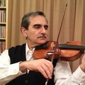Tigran Dolukhanyan began playing violin at the tender age of six, and since has performed in numerous symphony and chamber orchestras, including the Yerevan State Symphony Orchestra (viola), Lowell Philharmonic Orchestra (violin), Chamber Orchestra of Yerevan State University (violin, concertmaster), Chamber Orchestra of Yerevan State - Theater of Opera and Ballet (violin), Chamber Orchestra of Moscow State University (violin), Chamber Orchestra of Yerevan State Polytechnic Institute (viola).
Tigran has taught violin, viola and string chamber ensembles for more than 15 years to students of different ages and levels. He is a graduate of Spendiaryan School of Music in Yerevan, Armenia, and holds an MS and a PhD in Physics.
Dr. Christopher Gagne
Trombone, Trumpet, French Horn, Tuba
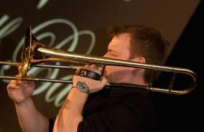Dr. Christopher Gagne holds degrees in performance and composition from the Berklee College of Music (BM), the New England Conservatory (MM) andthe University of Miami (DMA).
Over the past decade, Chris has taught throughout the New England region at all levels of instruction, from the elementary through collegiate. An active trombonist, Chris maintains a busy performance schedule throughout the Greater Boston area. His playing has been featured on numerous recordings, including on a recent release by legendary jazz guitarist, George Benson. His playing has also been featured on some recent PBS concert specials featuring Gloria Estafan and Chick Corea, among other notable artists.
Chris has been named a finalist in numerous national and international performance competitions, and both Downbeat Magazineand the Massachusetts IAJE have recognized his compositional work. Currently, Chris is an adjunct on the faculty at Merrimack College, teaching courses in music and directing the Jazz Ensemble at the school.
Chris tries to strike an effective balance in all of his lessons with students, striving to always keep studies engaging and instructive.
Haley Leach
Office Manager
Haley Leach is originally from Topeka, Kansas. You will see her friendly face in the office first thing you come to Keys for Kids school. She studied at the University of Iowa in Iowa City, Iowa, with Dr. Scott Conklin, graduating in 2014 with a degree in Violin Performance and German. Along with being an avid chamber musician, Haley is extremely interested in pedagogy and especially community outreach.
Using her position as Service Committee Chair of the Zeta Epsilon chapter of Sigma Alpha Iota, Haley worked with both chapter members and community members to create an annual event where local Girl Scout troops could earn their music badges. Haley recently graduated with a Masters of Music from the Boston Conservatory in Boston, Massachusetts, where she studied with Sharan Leventhal.
Jennifer Lester
Dance and Movement Class
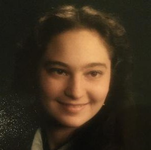Jennifer has a Bachelor's Degree in Early Childhood Education from Lesley College, 1988 and a Master's Degree in Theater Education from Emerson College, 1994. She began her dance career with The Boston Ballet at age 5 with Sydney Leonard and danced in their production of "The Nutcracker Suite" for several years.
Jennifer has been teaching dance classes and Early Childhood Dance and Movement programs since 1994 in several dance studios in the Boston area including The Dancing Arts Center in Holliston and Creative Steps Dance Studio in Newton. She also has taught drama classes at The Watertown Children's Theatre and Boston Children's Theatre.
Jennifer continues to take jazz classes at The Dance Inn in Lexington with Thelma Goldberg and ballroom dance lessons at The Fred Astaire Dance Studio in Belmont. She performed with The Reagle Players in Waltham for many years.
Julia Nelson
Voice, Sing 'N Kids
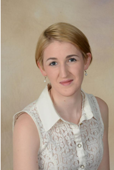Julia Renée Nelson is a Boston-based musician whose celebrated performances have been called "atmospherically transcendent," (Longy School of Music) and "gently charming," (University of Massachusetts). She ministers as a soprano soloist and cantor in many local parishes, most recently St. Adelaide's Church in Peabody, MA. As an opera singer and theatrical performer, Julia trained at the New England Conservatory and the Crittenden Opera Studio, where her lyric coloratura achieved particular acclaim in roles by Handel and Purcell.
She is a frequent lecturer and recitalist of all styles of art song, and has received distinctive recognition for her interpretations of Germanic Lieder, of whose language she is a fluent speaker. In 2013 and 2014, Julia was invited to participate in two lecture series which were presented in four cities throughout the United States and Europe. Julia's contributions to the series pertained to the onomatopoetic writing demonstrated in song cycles of Richard Strauss. The lectures were sponsored by two prestigious German cultural organizations: the Goethe Institute, from which Julia has received numerous awards and grants for her linguistic work, and the Salzburg Institute of Religion, Culture, and the Arts, of which organization she is a graduate and Honors Scholar, in collaboration with the Mozarteum Universität Salzburg.
Julia has been an enthusiastic music educator of both piano and voice for more than ten years, and cheerful member of the Keys for Kids faculty since 2011. Her duties at Keys for Kids have included keyboard groups of all levels, the popular Sing N' Kids group, and private instruction in both piano and voice. Julia's singing students, in particular, have been actively competitive performers, and have achieved distinction in prestigious competitions, including those sponsored by the National High School Musical Theater Awards, the American Association of Christian Schools, and Classical Singer Magazine. Julia's students may be heard and seen performing in select ensembles throughout the greater Boston area, including Lexington High School, Open Bible Academy, and the Walnut Hill School for the Arts
Karina Perebeyeva
Flute, Piano
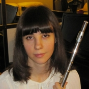Karina Perebeyeva received her BA from Almaty College of Music (USSR) and her Masters of Music degree with a major in Flute and minor in Piano from Almaty State Conservatory of Music (USSR). Karina continued to study flute with Leonard Mironovich of the Longy School of Music and has performed on Armenian radio and television. Today, Karina continues to perform professionally with various chamber groups . Karina has more than 15 years of teaching experience across all ages and abilities.
Karina's goal is to instill a sense of music appreciation and encourage students to expand their interests. She takes a serious, academic approach at a highly professional level in preparing those looking towards competitive performances, but equally enjoys teaching students who simply wish to better understand music. Karina focuses on offering praise and positive encouragement to keep students motivated and eager to learn and progress in their development.
Karina thinks that every child is unique and she creates a special approach to musical education for every young student.
Laura Prichard
Voice, Piano, Acoustic Guitar, Woodwind, Percussions, Special Needs
Laura Prichard majored in music at Yale University and holds graduate degrees in performance, conducting, and music history/theory from the University of Illinois. She studied voice in the graduate studio of William Warfield (from Showboat) at the University of Illinois, with Jan DeGeatani (Eastman School of Music) and Lili Chookasian (Metropolitan Opera) at Yale. She sings regularly with the Boston Symphony, Boston Ballet Orchestra, and Boston Pops.
Laura was a founding student member of the semi-pro Drum Corps Star of Indiana, based in Bloomington, IN (on keyboard bells, quadruple mallets), and has played "Reeds" (flute/clarinets/saxophones) professionally for Boston- and San Francisco-area professional musical theater orchestras. She teaches woodwind, voice, piano and acoustic guitar lessons at the Dana Hall School of Music in Wellesley.
Laura's grandmother was a piano teacher, and she loves working with performers of all ages and interests. She studied jazz piano with Moke Owens (Chicago Jazz player in the 1960s) and her students have won IAJE National and Regional jazz awards and scholarships. Laura has been a member of the Music and History faculties at UMass-Lowell since 2004. She lectures frequently in the Boston area on musical topics and is a regular guest lecturer for the Chicago Symphony (since 2009) and San Francisco Symphony (since 1997).
Robert Rivera
Cello, Composition
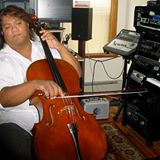Robert Rivera began studying cello at age seven. He holds a diploma from the Mannes School of Music, a Bachelor of Music degree from the Manhattan School of Music, and a Certificate of Performance from Moscow Conservatory. Robert has played extensively throughout the US and Europe; he has also been an orchestral member of the Boston Philharmonic Orchestra, Brookline Symphony, Longwood Symphony, New Hampshire Philharmonic, Rhode Island Symphony and the Fabric Musik Ensemble of Stuttgart in Germany. Currently, he is a freelance cellist in the Boston and New York areas, working in genres such as classical and jazz. He was the winner of Best Original Score for the film "Sympathetic Details," in the Almost Famous International Film Festival of 2008, in collaboration with Benjamin Keddy. He also appeared in a WGBH segment on Art in Bloom with poet Reggie Gibson in June 2004, and, in February 2003, received mention from the Boston Herald: "cellist Robert Rivera stays in motion, it's a rush."
Robert believes that students must have a good classical foundation of the cello, and asserts the importance of music theory in all of his lessons. His personal teaching philosophy is to give students cello instruction that can be transmitted to any genre of music, and in such a way that all of his students can create their own compositions as well.
Martha Rogers
Piano
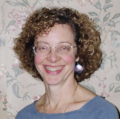Ms. Rogers earned a Bachelor of Arts Degree in Piano and English Literature from Lewis and Clark College in Portland, OR, as well as a Master ofEducation Degree from Lesley University in Cambridge, MA. In addition, she holds a Certificate and License in Dalcroze Eurhythmics from Carnegie Mellon University in Pittsburgh, PA, the Longy School of Music in Boston, MA, and Lesley University in Cambridge, MA.
As a performer, Ms. Rogers has played with the MAZZ Improvisation Ensemble and the Boston Songwriters Workshop Cabaret, and served as a Mime accompanist.
As a teacher, Ms. Rogers has served on the Elementary Music Faculty at the Bowman School in Lexington, MA, and has been an adjunct faculty member at The Boston Conservatory in Boston, MA, the University of Massachusetts in Lowell, MA, and Lesley College in Cambridge, MA. She has earned numerous teaching awards, including the Fannie Mae Teacher of the Year in 1990; Excellence in Teaching in 2003, MWRA; Lexington Public Schools Elementary Teacher of the Year in 2008; a Society for General Music Teaching Award in 2009, and OVA Award in 2009.
At the Keys for Kids Studio, Ms. Rogers offers private piano lessons. She enjoys incorporating improvisation and movement into lessons. "A little free play in the midst of structured practice is a healthy thing!"
Kiera Thompson
Piano, Keys for Kids Classes, Clarinet, Music Therapy and Special Needs
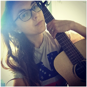Kiera Thompson is a practicing music therapist and musician who is a certified Keys for Kids instructor, and teaches group piano and early childhood music/movement classes. As an educator, Kiera has been on faculty for several schools and music education programs with varying roles, such as an early childhood movement teacher at The Advent School, a group clarinet instructor for Melody Makers, and a private piano instructor for KeyNotes Music.
Throughout her work as a musician and teacher, Kiera Thompson became interested in the healing aspects of music and its potential for children with special needs. This path lead towards working with children and adolescents with developmental disabilities and mental illness as a music therapist and mental health counselor. Kiera's research and clinical training has focused on working with children and adolescents with Autism Spectrum Disorder, Isodicentric15 Chromosome Abnormality, and Post Traumatic Stress Disorder. Kiera has presented at the 2013 New England Region of the American Music Therapy Association Conference in Newport, RI, as well as the 2012 Passages Music Therapy Conference in Cambridge, MA. Kiera presently works with infants/toddlers with visual impairments, as well children ages 3 and up with developmental and neurological disabilities.
As an active musician, performer, and clarinetist, Kiera Thompson has broad performance experience both nationally and internationally, including performances at Jordan Hall in Boston, MA; Sanders Theater in Cambridge, MA; The Kennedy Center in Washington, DC; Carnegie Hall in New York City; Shanghai Oriental Performing Arts Center in Shanghai, China; and Helmut-List-Halle in Graz, Austria. Kiera has also performed at the Atlantic Music Festival Fellowship Program in Waterville, ME; the Buffet-Crampon Clarinet Academy in Jacksonville, FL; and the Impuls - International Ensemble Academy for Contemporary Music in Graz, Austria. As an orchestral musician Kiera has performed as principal clarinet for the Harvard Summer School Orchestra and the Civic Symphony of Boston, and as second clarinet for the former Isabella Gardner Chamber Orchestra and the Waltham Symphony Orchestra.
Kiera Thompson has studied with many established artists, such as clarinetists Michael Rusinek, Marguerite Baker, Nancy Genovese, William Wrzesien, Mark Nuccio, and Ernesto Molinari. On the piano Kiera has studied with Burnett Thompson, Carol Sicily, Leslie Amper, and currently studies with spirit free jazz guitarist, Tisziji Munoz, on both piano and guitar. Kiera received her Bachelor of Music degree in clarinet performance from the New England Conservatory of Music in 2005, and her Masters of Arts degree in music therapy and mental health counseling in 2014 from Lesley University.